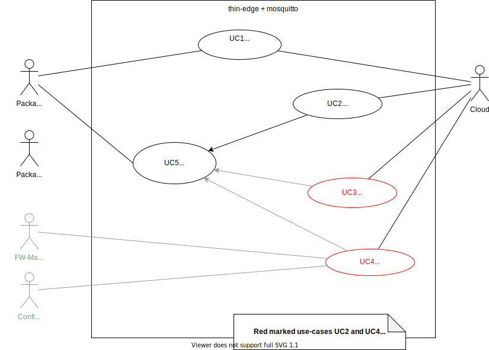

Introduction
That document specifies the feature "Software Management" in scope of thin-edge.
In thin-edge "Software Management" functionality basically results from given Cumulocity's "Software Management" feature. Anyway thin-edge's "Software Management" concept shall be flexible and open for potential other upcoming Clouds (e.g. Azure).
The diagram below indentifies all relevant use-cases for thin-edge. Thereby each use-case represents a functionality and each will be detailed in a further (linked) sub-specifications.
Some further explanation about diagrams elements it's interpretation could be found below the diagram.

Actors
In the middle of the diagram thin-edge + mosquitto are visible as system. To reduce complexity both are considered here as one black box.
At right side actor Cloud represents Cumulocity or another potential cloud.
At left side multiple Package-Manager actors are placed. A Package-Manager is a SW component that supportes to install or remove SW packages on the Device (e.g. Debian's "APT", Canonical's "Snap" or Red Hat’s “RPM”). Thin-edge "SW Management" concept requires that one or more Package-Managers are provided by the Device's SW system.
Finally on left side actors FW (Firmware)-Manager and Config-Manager are denoted. Both are shown here to point out that for now Firmware and Configuration are out of scope of that specification. Note that in the diagram both have no connection to any relevant use-case.
Use Cases
All use-case above are prefixed with a unique identified (as UC<i>), just for easier referencing.
| UC1: | "Report SW List" |
|---|---|
| Purpose | The device reports a list of current installed SW packages to the cloud. Therefore all Package-Managers are involved. |
| Trigger | TO-BE-DECIDED-#1: Just on Device/Agent start? Or somehow periodically? (Last might capture also manually installed packages). For taking decicision see also "Software Management Study" in archbee: https://app.archbee.io/docs/9iGX1hbDjwAeMfyO9A3YE/coxr9CuTWSjk0eE1Nzgoj -> There check section "Update Profile Operation" and search for "periodically". |
| TODO: add link to more details about that use-case. |
| UC2: | "Update SW List" |
|---|---|
| Purpose | Installing or removing one or more SW packages on the device. |
| Trigger | Request coming from cloud. |
| Detailed spec for that use-case is here: src/software-management/usecase-update-swlist.md |
| UC3: | "Sync SW List" |
|---|---|
| Purpose | Sync Software List of Cumulocity. In Cumulocity it has been deprecated in favour of "Update Software". For now that use-case is out of scope for thin-edge. See also "Cumulocity Use Case: Sync Software List" in archbee: https://app.archbee.io/docs/9iGX1hbDjwAeMfyO9A3YE/UuDcppPEYlD9alaF7y_e7 |
| Trigger |
| UC4: | "Update Profile" |
|---|---|
| Purpose | Update Profile Operation of Cumulocity. A profile contains beside a SW list also a desired Firmware and Configuration. Firmware-Management and Coniguration-Management are planned later for thin-edge, so that use-case is currently not relevant. |
| Trigger |
| UC5: | "Install/Remove SW Package" |
|---|---|
| Purpose | Installs or removes one or more SW packages on the Device. Therefore the Package-Manager that manages the relevant package is involved. |
| Trigger | UC2 ("Update SW List") |
| Detailed spec for that use-case is here (same as for UC2): src/software-management/usecase-update-swlist.md |
Open Topcis
(1) Open Decision about trigger of "Report SW List". See "TO-BE-DECIDED-#1" above.